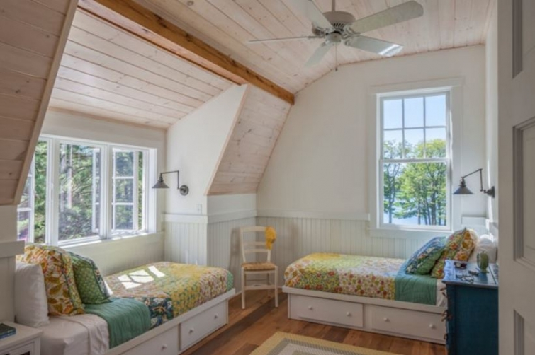
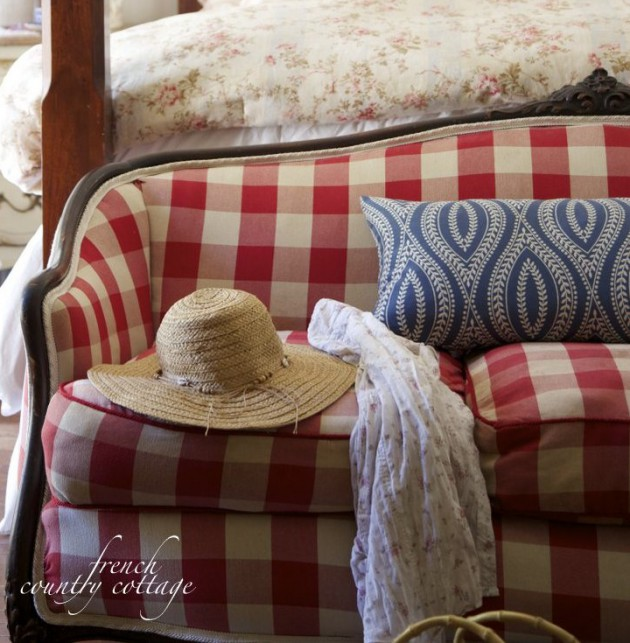

.png)
.PNG)
.PNG)
.PNG)
.PNG)
.PNG)
.JPG)
.JPG)
.PNG)
.PNG)


Happy Weekend!  There is SO much to talk about today! Go get a cup of coffee or tea and then settle in here for a little while. (You might want a snack as well. 🙂 )
I was trying to determine why we all loved the house in the last post. Â Yes, I know it is amazing and has quality workmanship, but there is something more about it. Â I believe it is because it is so nostalgic. Â Don’t you think that’s it? Â I ran across another house this week that speaks of nostalgia. Â It is a lake house in Maine, and the owners were inspired by summer camps there. Â You can read about it here.
source
This week, I received a very sweet message from a reader that thanked me for not chasing every trend that comes along in the world of home design.  I have to admit that I did when I was young, but as I have… um… matured?…it seems I gravitate to more classic design.  I read a very good post discussing this struggle the other day here.  (The beautiful red buffalo checked sofa below belongs to the author of that post.)

Are you hosting a Super Bowl party this weekend? Â We have a number of major events coming up in the next week so this year our game watching will be low key. Â But if you are still looking for ideas, here is our party from a couple of years ago.
If we were hosting a party here this weekend, this nacho bar would definitely be on our menu.
And speaking of food (which I seem to do too much lately! LOL) did you know Sara Foster has a new cookbook out?? Â How did I miss that at Christmas?

Foster’s Market Favorites: 25th Anniversary Collection
(My Amazon affiliate link.)
Her roasted potato salad is my all time favorite one to make.  (You can find my post on the recipe for it here and the post on our trip to her restaurant here. 🙂 )  And I just might have to pull out my old Foster’s Market cookbook to make her salsa for our Super Bowl watching.  It is another all time favorite!
Do you remember the other day we were talking about author, Patti Callahan Henry?  When I first read her name I thought, That name sounds like it should be a character in a Mary Kay Andrews novel!  Doesn’t it?! Well last week I ran across this – an interview between authors Patti Callahan Henry and….Mary Kay Andrews!  It’s a fun read, and you will enjoy checking it out. 🙂
The Idea of Love: A Novel  Beach Town: A Novel
 Beach Town: A Novel
(My Amazon Affiliate links)
I told you that Patti Callahan Henry bases many of her characters and settings on Daufuskie Island, South Carolina. Â There is another author who has done the same thing…Pat Conroy.
The Water Is Wide: A Memoir
(My  Amazon Affiliate link)
Many of you have probably already read this novel. Â It is his touching memoir of being a young teacher who accepted a job on Daufuskie (called Yamacraw Island in the book) to work at an all black school – their first white teacher and their first male teacher. Â It was also made into a Hallmark movie a number of years ago, but it wasn’t filmed on Daufuskie due to the island’s only access being by boat.
The Water Is Wide – Hallmark Hall of Fame
(My Amazon Affiliate link)
Do any of you remember seeing the movie or reading the book?
One of his students was Sallie Ann Robinson. Â She is now a famous cookbook author and keeps in touch with Pat Conroy (who as you can see, wrote the foreword to one of her books.)
Gullah Home Cooking the Daufuskie Way: Smokin’ Joe Butter Beans, Ol’ ‘Fuskie Fried Crab Rice, Sticky-Bush Blackberry Dumpling, and Other Sea Island Favorites
(another Amazon affiliate link)
Here is an interview she did a number of years ago with abc.
Garden and Gun magazine also featured her in a lovely article in 2009.
Another interview you will enjoy is this one with Kay Stanley (the owner of the gorgeous house in the last post.)
The interior designer who worked on the house with Kay was Carolyn Hultman.  (Her website is here.) Carolyn’s firm also designed the interior of the Spartina 449 flagship store in Bluffton, South Carolina. (I wish I had known about the shop when we visited Bluffton a couple of years ago. 🙠)
(Click on the link and be sure to take a look at the wonderful interior of the shop! 🙂 )
Spartina 449 has a huge warehouse sale each year in Hilton Head, and shoppers line up early in order to take advantage of big discounts on the merchandise. Â If you happen to be in Hilton Head in July, I hope you will have the opportunity to go to the sale.
I think that is about everything I wanted to share with you this weekend.  Don’t forget about the giveaway going on here.  Just leave a comment on any post (or all for more chances!) that publishes between 2/4/16 and when the entry period closes at 11:59 p.m. EST on Monday 2/8/16 to have an entry in the random drawing. (Only one comment per post please.) The comment must be on the post itself at www.talkofthehouse.com and not a reply to an email delivered post.  I’ll have a random drawing on 2/9/16 and announce the winner in the first post after that date.
Thank you to all of you who left such sweet comments on the last post!
You all are the best!! 🙂
I hope you have a super fantastic weekend. Â Enjoy the game!


.PNG)
Another interesting post! I love that red buffalo check sofa! I am not familiar with Sara Foster’s cookbook. I will have to check it out. Loving reading your blog!
What a fun post with lots of inspiration! I visited the Spartina Store last August while visiting a friend who lives in Bluffton. It is a charming store, with beautiful merchandise. Know your Super Bowl party was just super, with your decorating and the yummy food from the recipes you shared. I’m a big fan of Pat Conroy! Love your style and your blog!!
Great book recommendations. Mary Kay Andrew’s books are always fun beach reads!
I don’ know how I missed this post ?! Must have been too much partying going on around my house this past weekend! But I loved all the info — then I looked back at the potato salad recipe and I must have missed it too– but now I really want to try it for Easter this year — can not believe it is next month already!! Have a nice week leading to Valentine’s Weekend !!
Thank you for recommending the article on “Chasing Trends.” Trends come and go so quickly, and I have always felt more content with things in my decor that just make me happy. Things that bring us joy make our house a “home.”
Kelly, I always get so excited when I see an email that you have posted! Its always a joy to see whats new! Always so full of beauty and neat ideas! Thanks for never disappointing! 🙂
Char
It would be wonderful to be able to attend the Warehouse sale in July….I’ll have to tuck that idea somewhere and mull on it. And, I’m always looking for good authors, so thank you for sharing, again.
I’ll have to add these authors to my reading list! The Spartina 449 Warehouse sale would be fun to attend.
Wonderful post, full of great ideas and more. I’ll look for the authors you mentioned.
Ordered two Patti Callahan Williams’ books. Can’t wait to get them. Started with a couple of the older ones. Will have to check out Foster’s cookbook.
Just finished 2 books and will check out the Pat Conroy book. And that cookbook is definitely a keeper!
I absolutely love the homes you share! And I just recently started noticing Spartina items, another thing to love! 🙂
I am inspired by this bedroom you shared for my granddaughters. My style for sure. Love it.
Pat Conroy is one of my favorite authors and I’m also a fan of Sarah Foster. I missed that she had a new cookbook, also. Thanks for mentioning it in your post. It’s probably a good thing I don’t live near that Spartina 449 shop. Oh what loveliness! Thanks, Kelly, for another great post!
I loved visiting visiting Foster’s a few years ago. I need that new cookbook. Love the homes you share.
I never get tired of your posts. I learn something new every time or see something I love.
What a fun post. This is one Hallmark movie I haven’t seen….will definitely be checking it out. We visited Hilton Head Island last summer on our vacation and LOVED it!!! Too bad we can’t go back this year for the big sale! 🙁
Spent a week on Dufuskie Island and it is truly a special place and
so is Talk of the House. Look forward to every post!
You’re a true one-stop-shop! I love reading about all the new books, resources, recipes, houses, travel destinations, decorating ideas and more that you share with us. Through you, I’ve found out about some very interesting places and things that I’d somehow missed before. I’m definitely going to check out Hallmark’s The Water is Wide movie–and Sara Foster’s cookbook. Yum!
As always, thanks for taking us along for the ride. 🙂
PS…can you recommend any good (and not excessively pricey) places to stay in Highlands or even at Lake Lure? Not sure Old Edwards Inn is in the budget…although I wish it was.
I’m a huge Mary Kay Andrews fan. I haven’t read any Pat Conroy, but I may have to now. And that Gullah cookbook looks wonderful! Thanks for always sharing such great links…
Thanks for the great photos and sharing the links/sources for so many wonderful things and ideas. Always love your blog and the posts you write/share. Blessings to you….
I do not chase trends either. Our home is filled with classic furniture, antiques and things that mean a lot to me. I do bring in small touches to update the look so it doesn’t look stale.
Great read for a snowy weekend in New England!!! Dreaming of summer with a cute new bag and great summer read!!! My youngest son committed to Coastal Carolina this weekend for the fall!! Just might have to coordinate his move in date with that warehouses sale!!!!
Enjoyed the post about trends. Somethings I think it’s because I’m getting OLD, but my style has been amazingly consistent through the years. Even working in furniture retail for years where I was constantly exposed to the newest trends, I still knew what fit my ‘look’ and what didn’t.
Loved the movie ‘Conrack’ mentioned above. I’ve enjoyed several of Pat Conroy’s books.
No Super Bowl party here. Had to switch from the Super Bowl to Downton Abbey – no DVR. Just as well as Carolina is losing :-(.
Love Sara Foster’s restaurant. I think I need that cookbook.
There is nothing like “classy” design. And, may I add that your blog is one “classy” blog. I always enjoy reading it and taking in its ambiance, one sip at a time.
You take care.
I love your blog! You have a great mix of decorating, recipes, etc.
Hi Kelly, Thanks SO MUCH for the recipes! So perfect for get togethers! Know if you are recommending THEY ARE GOOD!
Kelly,I’m new to your site and I’m loving every post!
Your style in decorating is beautiful and you have such a lovely home.Looking forward to the New Year with you!
Thank you for the fun giveaway!
Pat Conroy is one of my favorite authors!
Guess I’m one of the older readers here, because I recall the original film version of The Water is Wide, which was a big screen movie entitled Conrack, starring Jon Voight (1974). I’ll have to go back and watch the Hallmark production! I was lucky enough to hear Pat Conroy speak recently. He appeared with author Katherine Clark, who grew up in Birmingham, and whom he mentors. Her work also might be of interest to your readers, since it has a distinctively Southern flavor. Katherine’s first book, Motherwit, is the true story of a midwife in south Alabama. Her second book, Milking the Moon, is the biography of a Capote-esque (and Gump-esque) Mobilian named Eugene Walter. Last year she released a novel that takes place in Birmingham and centers on the school that she (and later, my son!) attended. One of the main characters in the novel is based on the real-life headmaster of the school throughout Katherine’s days there. He was a legendary figure in Birmingham, “larger than life” in both personality and physique, and just three or four years ago, Katherine compiled a volume of affectionate remembrances of him, submitted by his former students. The collection was fittingly entitled Larger Than Life. It was that book, I believe, that caught the eye of Pat Conroy. He called the school and asked if he could visit and speak to the students. (Uuuhhh, YES!!!) He talked to them about the tremendous impact their teachers were having on their lives, whether or not the students realized that fact now. Conroy returned to the school last fall to appear with Katherine and discuss her novel, which is the first offering in a series that’s being published through Pat Conroy’s imprint at the University of South Carolina. Kelly, I think it’s so fitting that you mention “Conrack” and The Water is Wide in your post. How that story must resonate with you, because the photos you’ve shared with us of your classroom show how much you cared for and invested in your students. What a tremendously positive impact you must’ve had on the hundreds of children you taught. Having you as a teacher must’ve been nothing short of magical, and your students will never forget the happy days they spent with you. Many thanks for another delightful and informative post from one of your current-day “students”!
Kelly, this was such a special post! I so love Pat Conroy and agree with Amber that Conrack with Jon Voight was the best, so heartbreaking. But, I’ve not read the book, so that is a must order from Amazon. Also, remember Sarah Foster and Martha Stewart when Martha was still filming at Turkey Hill. Sorry that I’ve not eaten at her restaurant, but will do that when I head to the Raleigh area in a few months. And, the interview with Sallie Ann was very special. Thank you so much for sharing and for the giveaway. It is such a pleasure to see a Talk of the House email in my inbox.
Hi Kelly,
Thank you for the wonderful post. I took copious notes. Books, bags, and bangles? Doesn’t get better than that.
Jane
Kelly I loved this last house even more. The Bedroom was adorable, cozy and somewhere you could just go to read. I also love the books. I have not read that book by Pat Conroy..but have read his others. This is one of my all time favorite reads, South Carolina!
That house at the top of your post has my dream setting…trees surrounding me and a view of a lake in front. It is always nice to read your blog and read about different places, shops and restaurants…it is better than going somewhere unfamiliar and guessing. I wish I was able to go to the Spartina Sale but going there someday will have to be added to the Bucket List.
Lots of good stuff in today’s post, I’ll be checking out many of the links!
Have a great day!
I have not seen the movie, but the more I read about this island in South Carolina, the more I want to go. My grandmother had a beach house on Sullivan’s Island, another great place to see and visit. Thank you for the links to the recipes, they look delicious. Super Bowl will be low key here too. I can’t wait to hear about all the things you have planned over the next few weeks. I am definitely going to put the Spartina Warehouse sale on my calendar. Thank you for the information .
Thanks for giving me another beautiful home to explore!!! Maine has been on my bucket list since I was a child because our minister was from there. From Maine to Kentucky……pretty funny, huh. And he shared lots of lovely memories. It just amazes me that every time I read your blog; you are talking about something that really interests me, maybe it’s our teaching hearts talking. lol!! Keep those beautiful homes coming!!! And the give away looks great!
I just love Mary Kay Andrews! So I will definitely have to check out Patti Callahan Henry and Pat Conroy! I sure wish I was going to be in Hilton Head for that sale. Looks great! I rreally enjoy all your posts!
Love your blog
Trendy is something I am not. I concur with Courtney from the hyper link that states,”I like vintage and pieces with history and memories.”
“And those are considered ‘trendy’ from time to time but mostly are just what you like.” She goes on to say that,
“To me that is a trend that I love to live with all the time.” Because my number one rule for design or following trends or anything else-
if something makes you happy when you walk in the room-
it is exactly perfect.” COURTNEYhttp://www.frenchcountrycottage.net/
Well said and thank you Kelly for linking to this well written piece. My home is a reflection of my family and I and the days we have created together. Days of joy, happeness and sorrow are memories wrapped up in the pieces that give us comfort in our home together. Thanks!
Just found your blog and absolutely love it!
I am going to order the Gullah Home Cooking, cook book! I love all of Pat Conroy’s books so much. His writing is so fabulous, I love the way he puts words together, beautiful. Have you ever read his cookbook? I love it as it has stories and recipes.
Thanks, Vickie
Love, love spartina purses, scarves and hinged bracelets. Have read many of mary Kay Andrews books and love that they are about savanna and tybee island. Enjoy all your posts. Thank you.
I always enjoy exploring new authors. I have read several of Pat Conroy’s books. The southern flair appeals to me. Southern island living is a great summer read even if you aren’t at the beach.
The roasted potato salad looks wonderful. Can’t wait to try out that recipe.
I love the Super Bowl Party Ideas ~ Especially the nacho cheese bar! Thank you once again for the chance of the fabulous giveaway! Love reading your posts!
Thank you for writing about the books. I especially want to see the Pat Conroy movie and or read the book.
OMGoodness, Kelly,while reading your post, what should come on HGTV but Daufuskie Island!! How strange is that! I believe I should go buy a lottery ticket! I had never even heard of Daufuskie Island until I saw it on your blog!
I think I have read every single one of your posts. Early on, I think I told you how glad I was to find a blog that made me feel good about my house…and that so many blogs out there made me feel that I needed to go and paint everything aqua and orange. I loved your style in 2012 and I love it now…so classic.
Josie is hosting a Super Bowl party this year. (Yes, she retired!!!)I am so excited! Being from NC, we are Panthers fans! Thank you for the book recommendations. I am almost finished with my Mary Kay Andrews book and get nervous when I don’t have a book waiting in the wings.
Kelly, I think you and I could get in trouble shopping together. Wouldn’t it be fun to make a trip to Hilton Head for this sale? I love all your posts and so happy that I found your site. I like classic and I like color and a flair. Can’t believe how much you get done. I can sit on a project forever. Thanks for your ideas and inspiration. You are terrific.
Janet
Love this house and Classic design too!
Look forward to your posts!
Would love to win a he giveaway!
Have a great weekend!!
Check in with you almost every day. Always pleased to find a new post! Thank you for all your wonderful food, entertaining, decorating, and travel ideas-so much that meshes with our thoughts!
I really, really, really want that bedroom with the twin beds in it for my grandkids! It would be really nice if it overlooked a lake or the ocean! I figure why not dream big!
Kelly,
What a fun post. I love nachos. The mister is watching the Super Bowl while I go with girlfriends to see a movie!
I will have to take a close look at Sara’s new cookbook. I love her cooking.
Enjoy the weekend.
Karen
I love Spartina! After visiting my daughter in FL last June I was kicking myself for not buying the Amelia 2015-16 planner…it took me several phone calls and 4 boutique visits to find it, then promptly purchased matching felt tip markers for all entries. People give me compliments all the time and want to know where to get one!
I love the lighting fixtures in the last post! Thanks for the giveaway.
I will definitely be trying that potato salad, it looks delicious! I may just have to buy the cookbook.
Thanks!
Loved this post…I am from SC and I know Gullah food quite well! Good eats!
Other than The Lords of Discipline, I’ve never been really crazy about Pat Conroy’s novels. However, I LOVED his autobiographical book The Water is Wide. The Hallmark movie version is fine, but cannot hold a candle (in my opinion :)) to an earlier version called Conrack with Jon Voight as Pat Conroy. Absolutely great movie, though very hard to find. I think someone has uploaded it to Youtube, and sometimes it’s on TV. I highly recommend it!
Great post! And I surely want to go to the Spartina sale in July.I will be trying that potato salad recipe, sounds delish!
Thanks Kelly!
I am so glad I found your blog. I have so enjoyed it …love the party ideas….so much inspiration . Thank you.
Your blog is the only blog that I look forward to because your style is classic, comfortable and practical. The trendy ideas seem very “immature” to me. Your taste in decorating, food and travel are the best!
Thanks for another charming home. I have seen the Hallmark movie, The Water Is Wide. Now I want to read the book! Hope you are having a wonderful weekend!
Would love the Valentine Give away! I always enjoy your posts. Our tastes are so similar, but you are always telling me about items that I know nothing about but in which I am very interested. Please keep it up!
Thanks, Kelly, for another fabulous post. How lucky am I to live on Hilton Head Island (moved here from the San Francisco Bay Area) a little over three years ago to be closer to our kids and grands. It was then when I found your blog and have been a fan of yours ever since. Thanks for the Spartina sale dates – have noted them on my calendar. And speaking of Pat Conroy – one of my all time favorite authors – have read almost all his books. Have a wonderful weekend, Kelly.
Always a great read, Kelly. Love your classic and classy taste.
Thanks for the links. I especially enjoyed the one about trends. I really don’t care too much about trends either, until by chance, I have something in my home already that is on trend. Then it makes me feel really hip for a bit! 😉
I think your blog is such a hit because your design sense is classic and you have a great appreciation for color. I hate trends and at 66 I have lived through a lot of them. I have to admit I did have avocado appliances back in the 70’s, but learned to pick things that can stand the test of time and colors I love.
I agree with Vicki about the love/hate thing….I was going to check my e-mail quickly and after I opened yours I ended up spending an hour looking at all your links.
I live in NC and we are excited about the superbowl. I don’t think my food is going to look as pretty as yours, but thanks for the suggestions!
Loved this post. Since his book, The Prince of Tides, I’ve loved Conroy. The houses you’ve featured recently have all been wonderful and you are spot on with your observations on trends versus traditional styles.
Trying that roasted potato salad for sure. Thank you! I think you’ve hit the nail on the head — nostalgia grabs me every time!
This is a great post—so full of goodies. Thank you!
Love your weekend post. Lots of places to explore. Thanks.
Kelly, thank you for the time you obviously devoted to this post. I will return to it this evening and check out each and every source. Yes, as a former teacher, I enjoyed, The Water Runs Wide. It was a movie that pulled on every one of my heartstrings. I must check out the cookbook. And, don’t you think a trip to see my son in Savannah during the month of July would be a good idea? Just don’t tell my husband the real reason I want to head that way. Only my favorite blogger knows for sure!😉
Sherry
Thanks for the book recommendations! I am always on the look out for new reads!
Thanks for the give away.
Have a great weekend!
Hi Kelly, no super bowl party here either. The Hallmark movie I have seen~I virtually leave my TV on the Hallmark channel, lol. Loved the interior of Spartina 449, lot’s of fun shopping in there. Again thanks for the giveaway 🙂
Very dreamy house, makes me think of summer! And the biscuit is mouth watering!
Totally agree that we are bombarded with constant trend change. I’ll just keep enjoying
the beauty of the homes you share with your readers 🙂
I have a love/hate relationship with your “Talk of the Weekend” post. I love them because you include such a variety of things and I want to research each link. I hate them because I am tempted to just sit and research the links and not accomplish my “off day” list of things to do. In the end it’s a win win though…. It makes for a great motivator to quickly accomplish my list so that I can have some quiet time and devote my full attention to the eye candy! Thanks for all the great links and the detail of information that you put into these post.
Loved learning about Sara Foster’s new cookbook! I still use her recipe for Chicken Pot Pie topped with buttermilk biscuits cut from a Country Living magazine several years ago! The best!
You never disappoint with your content! Love ckecking in with you every day!
Loved the house in the previous post… All those windows, although beautiful, a lot of work!
More good reads mentioned and shopping. Can’t be better!
Thank you for sharing. I disagree, YOU are the best.
I am waiting for the next post!
PS Do we know what the paint colors are in the Daufuskie Island
house?